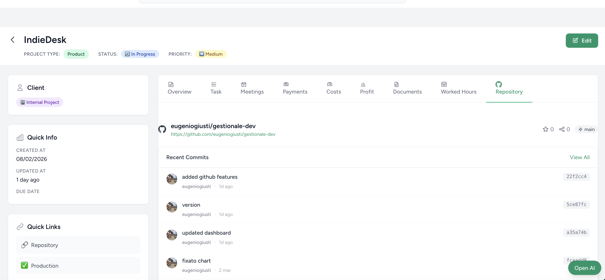

Why Spreadsheets Break When You Manage Multiple Client Projects
March 2026 · Eugenio Giusti

Many freelance developers start managing their work with spreadsheets. At the beginning, it works perfectly.
You track tasks, maybe a few expenses, invoices — and everything feels under control.
But something interesting happens once you start working on multiple projects at the same time. Spreadsheets begin to break.
Not technically. They still open fine. But they stop giving you the visibility you actually need to run your business.
The Moment Spreadsheets Stop Working
If you are working on one project, a spreadsheet is fine. If you are working on two projects, it's still manageable.
But once you reach three or four active client projects, things get messy fast. You start losing track of simple but critical questions:
- How much did I spend on this project?
- How much did this project actually earn?
- Which project is really worth my time?
Most developers try to push spreadsheets further. More columns. More tabs. More formulas. But the real problem is not complexity — it's structure.
Information Gets Scattered Everywhere
When managing multiple client projects, information usually ends up spread across completely different tools:
- Tasks in Trello or Jira
- Notes and documentation in Notion
- Invoices in accounting software
- Expenses in spreadsheets
Individually these tools work well. But they are not connected around the one thing that actually matters: the project.
Because of that, answering a simple question becomes surprisingly difficult: Which projects are actually making money?
Most Project Management Tools Are Built for Teams
Another issue is that most project management tools are designed for teams. They focus on sprints, collaboration, task workflows, and team productivity.
Which is great if you're running a company. But freelance developers and indie builders often work differently — they think project-first.
Every project contains everything:
- Tasks
- Documentation
- Client information
- Costs
- Payments
- Revenue
When those things live in different systems, you lose visibility. And without visibility, it becomes hard to understand the real value of your work.
What Freelance Developers Actually Need
What many solo developers actually need is something much simpler. Not another complex project management system. But a workspace where everything related to a project lives together.
- Tasks related to the project
- Documents and files
- Expenses and costs
- Payments received
- Simple project statistics
This way every project becomes a complete unit of work. You can quickly see what has been done, how much it cost, how much it earned, and whether the project was worth the effort.
A Project-First Workflow
After running into these issues myself, I started experimenting with a different approach.
Instead of organizing everything by tool, I started organizing everything by project.
Each project becomes a container that includes tasks, documents, labels, costs, payments, and statistics. This makes it much easier to understand the economics of your work.
Instead of managing isolated pieces of information scattered across tools, you manage complete projects — and you always know exactly where you stand.
IndieDesk: A Self-Hosted Workspace Built Around Projects
While experimenting with this workflow, I ended up building a small tool for myself called IndieDesk.
IndieDesk is a self-hosted Laravel workspace template built for developers who want to manage projects, costs, and revenue in one place — without relying on SaaS subscriptions or juggling disconnected tools.
Everything lives inside the project. Tasks, documents, costs, and payments all stay connected. The result is full operational visibility: you always know what's been done, what's outstanding, and what each project actually earned.
- Deploy it on your own server
- Own the code and modify it freely
- No monthly fees, no vendor lock-in
- Built with Laravel 12 and a clean relational structure
Final Thoughts
Spreadsheets are powerful. But they were never designed to manage complex, multi-client project workflows.
Once you're handling multiple client projects, what you really need is not more formulas. You need visibility.
And that usually starts with a simple change:
Stop organizing your work by tools. Start organizing it by projects.